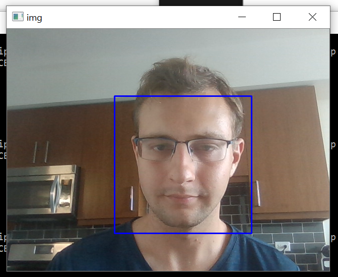
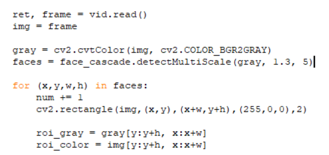

This week I focused on making progress on my final project. For the past few days I'd been trying to find a way to 3D print the frame for my censor-glasses, and had trouble finding somewhere that would work for me in the Austin area. I ended up having my parents print it at our local library on Long Island and overnight ship it.
To get started, I decided to get the core technology behind the projecct working, namely machine vision/image recognition. As a reminder, the project is focused on creating a pair of glasses that will block specific images that you don't want to see by recognizing them and then blocking out those pixels on a clear OLED display. To recognize the objects, I decided to use haar cascades, a standard method in machine vision that can identify objects by recognizing a set of particular patterns on a low level. I had worked with these before and luckily had OpenCV installed (which is a suprisingly difficult task on Windows).
I decided to start out by detecting my face through my computer's on-board camera, and downloaded a haar cascade for frontal faces off of an online database. After this, I coded it to create a rectangle around where it identified a face (or whichever haar cascade we use). On the left you can see the code used with the haar cascade, and below you can see the rectangle it drew, identifying my face.